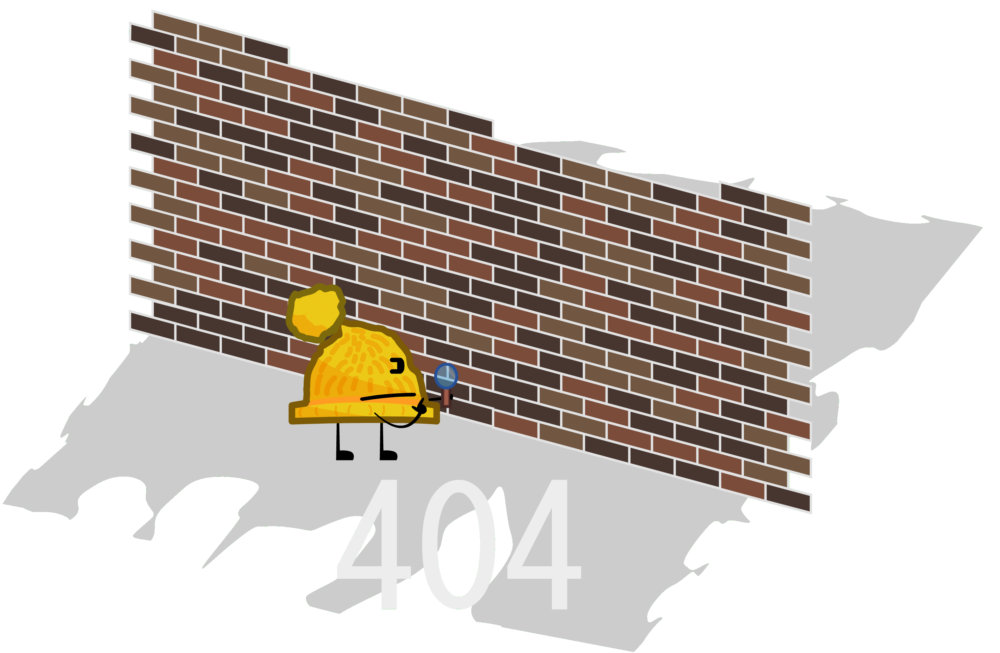

I searched every inch, but I cant seem to find what you're looking for!"
then out of the image add:
"Would you like to search for it?
(Note that hidden pages may not show)
[!LINK!]Hidden pages?[!LINK! Make the link lead to druidcdp.net/what/]"
Add a search bar here
here add a link to go back to the main page.